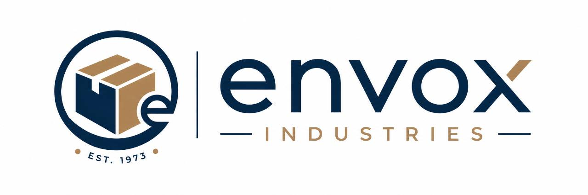
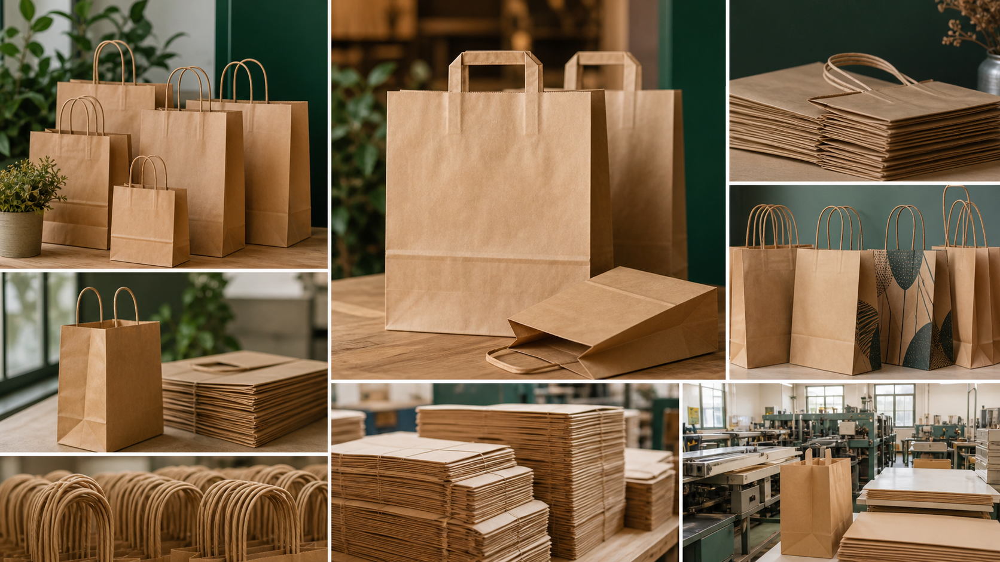

Kraft Carry Bags
Everyday brown kraft paper bags for retail counters, sweet shops, bakery counters, restaurant takeaway, and gifting.

Envox Paper Bag
Envox Paper Bag manufactures kraft paper bags, printed paper carry bags, shopping bags, SOS takeaway bags, flat paper bags, food delivery bags, and retail packaging bags for Indian businesses.

Paper bag manufacturing
A paper bag sits at the last moment of sale and the first moment of brand movement outside the store. It must hold weight, feel clean, suit the product, match the brand, and remain practical for retail, takeaway, delivery, and gifting. Envox Paper Bag supports businesses that need consistent paper bag supply across multiple sizes, handles, paper grades, and print requirements.
This unit is designed for buyers searching for paper bag manufacturer, kraft paper bag manufacturer, printed paper bag, shopping paper bag, restaurant takeaway bag, bakery paper bag, sweet shop carry bag, food delivery paper bag, and custom paper carry bag.
Product families
Everyday brown kraft paper bags for retail counters, sweet shops, bakery counters, restaurant takeaway, and gifting.
Logo-printed paper bags and custom branded paper bags that help shops turn packaging into a moving brand surface.
Self-opening square paper bags for restaurant packaging, delivery counters, cloud kitchens, cafes, and quick service restaurants.
Flat bags for bakery products, lightweight retail items, snacks, stationery, counters, and small product packing.
Buyer brief
Paper bag enquiry